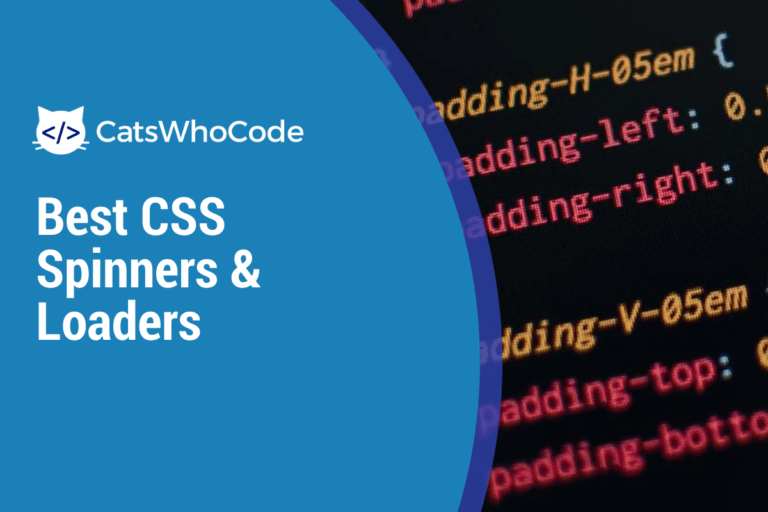
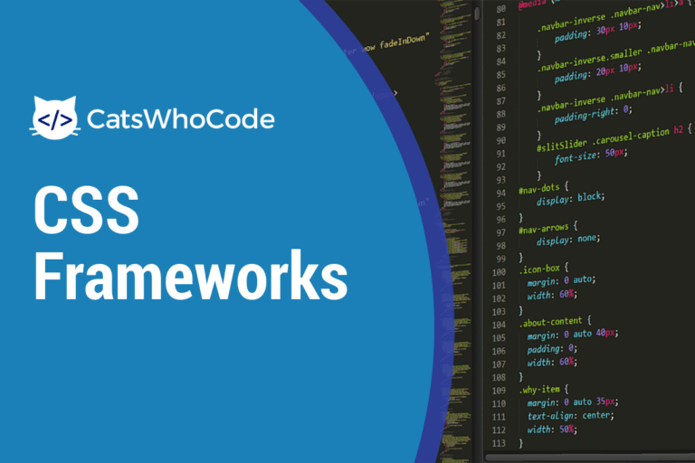
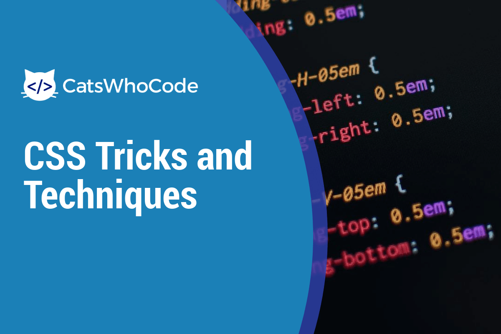
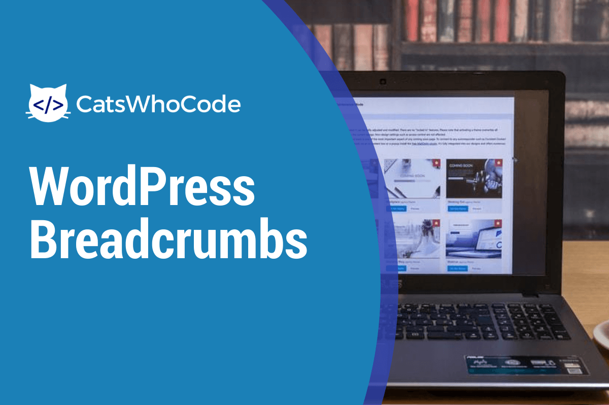
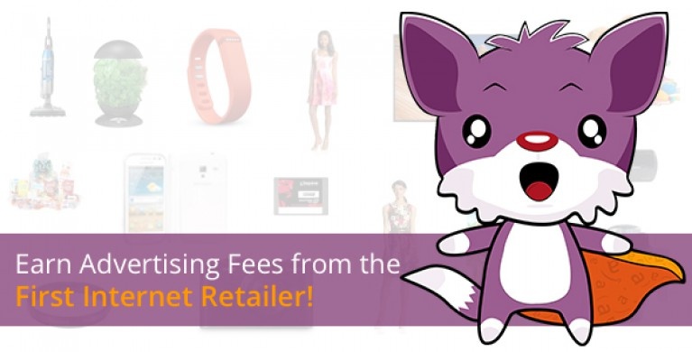

Ən yaxşı CSS əyiriciləri və yükləyiciləri
Müasir CSS üsullarından istifadə edərək hər növ bir yükləyici / əyirici yaratmaq heç vaxt bu qədər asan olmamışdır. Bu məqalədə 40-dan çox müxtəlif texnika və üslub nümayiş olunur.
Jean-Baptiste, Jun | Fevral 29, 2020
10+ Ən Yaxşı Online Kod Redaktorları
Bir gəliştirici olaraq, əsas vasitəniz, fikirlərinizi kod halına gətirməyə imkan verən vasitədir: mətn redaktoru. Vaxt keçdikcə daha çox onlayn mətn redaktoru
Jean-Baptiste, Jun | Fevral 16, 2020

Daha yaxşı veb saytlar yaratmaq üçün ən yaxşı CSS Çərçivələri
Bir veb sayt qurarkən, bir CSS çərçivəsini istifadə etmək, bir sayt hazırlayarkən hər veb dizayneri və ön inkişaf etdiricinin ehtiyac duyduğu alətləri təmin etdiyi üçün real vaxt qənaətçisidir.
Jean-Baptiste, Jun | Fevral 15, 2020
Ən yaxşı WooCommerce Kod Parçaları: Səbətə əlavə et Link və daha çox
5 ildən çoxdur ki, WooCommerce WordPress üçün ən güclü və istifadəsi asan e-ticarət plagini kimi tanınır. Bu yazıda, WooCommerce imkanlarını genişləndirmək üçün hər zaman sevdiyim hack və kod parçalarını tərtib etdim.
Jean-Baptiste, Jun | Fevral 13, 2020
InMotion Hosting Review & Giveaway
Veb hosting, etibarlı, sürətli və etibarlı bir ev sahibinə ehtiyacınız olduğundan bir veb saytın sahibi olmağın çox vacib bir tərəfidir. Ancaq hosting təmin edən yüzlərlə şirkət var. Bu gün gələk
Jean-Baptiste, Jun | Fevral 11, 2020
CodeIgniter Təlimi: CodeIgniter-ə Master olmağı öyrənin
CodeIgniter, PHP ilə dinamik veb saytların yaradılmasında istifadə üçün açıq mənbəli sürətli inkişaf veb tətbiqetmə çərçivəsidir. Bugünkü məqalədə bu güclü PHP çərçivəsi ilə demək olar ki, hər şeyi etməyi öyrənmək üçün çox faydalı 10 dərslik hazırladım.
Jean-Baptiste, Jun | Fevral 10, 2020
WordPress verilənlər bazanızı təmizləmək üçün faydalı SQL sorğuları
İllərdir istifadədən sonra WordPress verilənlər bazanız qəribə simvollar içə bilər, artıq ehtiyacınız olmayan məlumatlarla doldurula bilər və s. Bu yazıda SQL haqqında məlumat əldə edəcəksiniz
Jean-Baptiste, Jun | Fevral 10, 2020

Ətraflı CSS fəndləri və üsulları
Vaxt keçdikcə CSS getdikcə daha da güclənir və bu günlərdə vizual olaraq heyrətləndirici veb saytlar yaratmaq üçün bir çox imkanlar təqdim edir. Bu məqalə təzə,
Jean-Baptiste, Jun | Fevral 8, 2020
PHP cURL Nümunələr: cURL ilə əlaqəli 10 zəhmli şey
cURL və onun PHP uzantısı libcURL, veb brauzerini simulyasiya etmək üçün istifadə edilə bilən vasitələrdir. Əslində, məsələn, formaları təqdim edə bilər. Bu yazıda sizə PHP və cURL istifadə edərək edə biləcəyiniz 10 inanılmaz işi göstərəcəyəm.
Jean-Baptiste, Jun | Fevral 6, 2020

WordPress çörək qırıntıları: bu funksiyadan necə istifadə etmək olar?
Təəssüf ki, WordPress-in çörək parçasını göstərmək üçün standart bir funksiyası yoxdur. Bu naviqasiya texnikasının necə yaradılacağını və yazılarımızda, səhifələrimizdə və kateqoriyalar arxivlərimizdə necə göstəriləcəyini görəcəyik.
Jean-Baptiste, Jun | Fevral 1, 2020
HTML5 Audio Player: Ən yaxşı 10 oyunçu
Digər möhtəşəm xüsusiyyətlər arasında yeni HTML5 spesifikasiyası yerli səs axınına imkan verir. Bu yazıda, bu gün mövcud olan 10 ən zəhmli HTML5 səs pleyerini tərtib etdim.
Jean-Baptiste, Jun | Fevral 1, 2020
HTML Parçaları: İstifadəyə Ən Faydalı Nümunələr
HTML yazmaq çox asandır, lakin veb səhifələr yaratarkən tez-tez formalar yaratmaq kimi eyni təkrarlanan tapşırıqları yerinə yetirməlisiniz. Bu istifadəçi təlimatında mən tərtib etdim
Jean-Baptiste, Jun | Fevral 1, 2020
HTML < audio > etiketinin mənimsənilməsi
HTML5 ilə təqdim olunan < audio > etiketi bir səsi təyin edir və musiqi və ya digər sənədlər kimi audio sənədləri HTML sənədlərinə yerləşdirmək üçün istifadə olunur. 2020-ci ildən etibarən < /audio >
Jean-Baptiste, Jun | Yanvar 30, 2020
Pluginsiz bir WordPress Əlaqə Forması necə yaradılır
Bir çox WordPress plaginləri blogunuza bir əlaqə forması əlavə edə bilər, lakin bir plagin lazım deyil. Bu təlimatda sizə WordPress temanız üçün necə yerləşmiş əlaqə forması yarada biləcəyinizi göstərəcəyəm.
Jean-Baptiste, Jun | Yanvar 28, 2020
10 Awesome PHP Funksiyaları və Parçaları (Giriş Giriş və s.)
Hər bir veb inkişaf etdirici gələcəkdə istifadə üçün faydalı kod parçalarını şəxsi kitabxanada saxlamalıdır. Bu gün sizə son 3 ayda parçacıq kitabxanama əlavə etdiyim ən faydalı 10 parçanı və funksiyanı göstərirəm.
Jean-Baptiste, Jun | Yanvar 27, 2020
CSS Keçidləri: Dərslik və Nümunələr
CSS3 spesifikasiyasının yayımlanmasından bəri, keçidlər veb dizaynerlərə və qabaqcıl veb inkişaf etdiricilərinə JavaScript istifadə etmədən təmiz CSS-də çarpıcı CSS animasiyaları yaratmağa imkan verir. Bu sürətli CSS
Jean-Baptiste, Jun | Yanvar 27, 2020

WZone Plugin İncelemesi: Ən Yaxşı Amazon Affiliate Plugin?
İnternet mövcud olduğundan, tərəfdaşlıq marketinqi həmişə üçüncü tərəf məhsullarını tanıtmaqla onlayn pul qazanmağın ən təsirli yollarından biri olmuşdur. Bu gün, Amazon tərəfdaşlıq proqramından istifadə edərək onlayn pul qazanmağınız üçün hazırlanmış bir WordPress plagini olan WooCommerce Amazon Affiliates-ə nəzər salaq.
Jean-Baptiste, Jun | Fevral 26, 2020
Bütün ehtiyaclar üçün 19 FFmpeg əmri
FFmpeg, video və səs sənədlərini qeyd etmək, çevirmək və yayımlamaq üçün çoxplatformlu, açıq mənbəli kitabxanadır. 2000-ci ildə yaradılan, Linux, Windows və
Jean-Baptiste, Jun | Yanvar 26, 2020